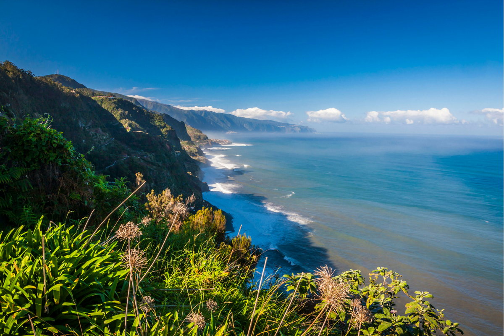
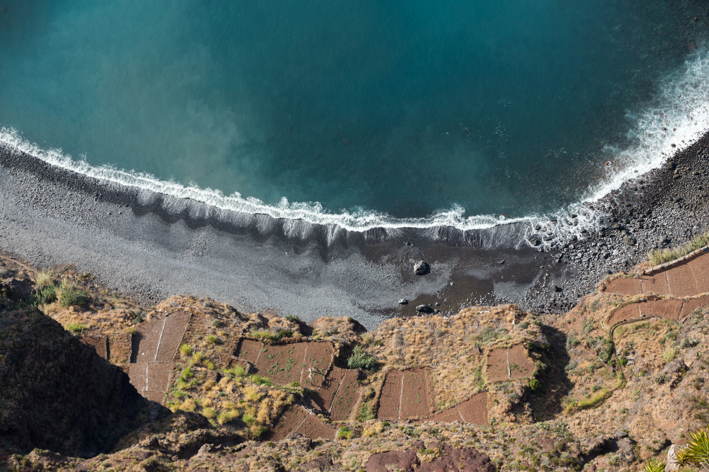
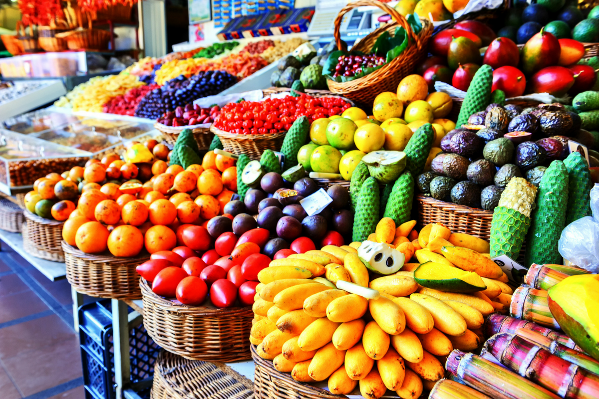

Even though this Portuguese island has everything you might want from your holiday destination, it is not as well known as it should be. The cliffs, roads, towns and volcanic mountains create the magnificent views that you won’t see anywhere else in the world.
Welcome to Madeira.
Why is Madeira so special? First of all, the whole island has been built on volcanic rocks of the old volcano. That alone gives us beautiful views, the best ones visible from the volcanic cliffs. Since Madeira is located on the top of the massive shield volcano, the island is mostly mountainous. This, however, brings the incredible views of the sea, rocky beaches and beautiful waves. Be careful though! Since Madeira is actually a really small island with quite high hills and mountains, the speed of the wind might be really dangerous for people. But if you take care of yourself and walk around the cliffs with caution, the views you will get will blow your mind.
Since we have been talking about cliffs, let’s focus a little on the highest European cliff – Cabo Girão. With the height of 580 metres, it is one of the island’s most beautiful spots. On the top of the cliff, there is a skywalk with a glass, transparent floor. This not only leaves you with some extraordinary views of the Madeira coast and the Atlantic Ocean but it also really tests your nerves. Standing on the transparent floor over 1500 feet above the sea level might be scary, but we advise to break through your fears and try it out. The feeling you get seeing the views from the Cabo Girão is more than amazing.
If you are a fan of cooking or just food in general, Funchal’s Mercado dos Lavradores is the place for you. This farmer’s market is full of traditionally dressed natives, marvellous fish and, the main attraction, fruit. The fruit which you can find there is truly a tropical rainbow. From full-flavoured bananas, through papaya and custard apples, to an interesting type of fruit called monstera deliciosa. We recommend coming to the farmer’s market with a big bag because there is no way you leave that place empty-handed. Foods like these are something every mortal human should try. Especially in a place as magnificent as Madeira.
